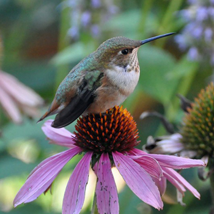

Hummingbirds are birds from the Americas that constitute the family Trochilidae. They are among the smallest of birds, most species measuring 7.5–13 cm (3–5 in) in length. Indeed, the smallest extant bird species is a hummingbird, the 5 cm (2.0 in) bee hummingbird weighing less than 2.0 g (0.07 oz).
They are known as hummingbirds because of the humming sound created by their beating wings which flap at high frequencies audible to humans. They hover in mid-air at rapid wing-flapping rates, which vary from around 12 beats per second in the largest species, to in excess of 80 in some of the smallest. Of those species that have been measured in wind tunnels, their top speed exceeds 15 m/s (54 km/h; 34 mph) and some species can dive at speeds in excess of 22 m/s (79 km/h; 49 mph). 
Hummingbirds have the highest metabolism of any homeothermic animal. To conserve energy when food is scarce, and nightly when not foraging, they can go into torpor, a state similar to hibernation, slowing metabolic rate to 1/15th of its normal rate. 
Vision
During evolution, hummingbirds have adapted to the navigational needs of visual processing while in rapid flight or hovering by development of an exceptionally dense array of retinal neurons allowing for increased spatial resolution in the lateral and frontal visual fields. Morphological studies showed that neuronal hypertrophy, relatively the largest in any bird, exists in a brain region called the pretectal nucleus lentiformis mesencephali (or nucleus of the optic tract in mammals) responsible for refining dynamic visual processing while hovering and during rapid flight. The enlargement of this brain region responsible for visual processing indicates enhanced ability for perception and processing of fast-moving visual stimuli which hummingbirds encounter during rapid forward flight, insect foraging, competitive interactions, and high-speed courtship.Hummingbirds are highly sensitive to stimuli in their visual fields, responding to even minimal motion in any direction by reorienting themselves in midflight. Hummingbirds' visual sensitivity allows them to precisely hover in place while in complex and dynamic natural environments, functions enabled by the lentiform nucleus which is tuned to fast-pattern velocities, enabling highly tuned control and collision avoidance during forward flight.
Metabolism
With the exception of insects, hummingbirds while in flight have the highest metabolism of all animals – a necessity to support the rapid beating of their wings during hovering and fast forward flight. Their heart rate can reach as high as 1,260 beats per minute, a rate once measured in a blue-throated hummingbird, with a breathing rate of 250 breaths per minute, even at rest. During flight, oxygen consumption per gram of muscle tissue in a hummingbird is about 10 times higher than that measured in elite human athletes.Hummingbirds are rare among vertebrates in their ability to rapidly make use of ingested sugars to fuel energetically expensive hovering flight, powering up to 100% of their metabolic needs with the sugars they drink (in comparison, human athletes max out at around 30%). Hummingbirds can use newly ingested sugars to fuel hovering flight within 30–45 minutes of consumption.
These data suggest that hummingbirds are able to oxidize sugar in flight muscles at rates high enough to satisfy their extreme metabolic demands. By relying on newly ingested sugars to fuel flight, hummingbirds can reserve their limited fat stores to sustain their overnight fasting or to power migratory flights.
Studies of hummingbirds' metabolisms are relevant to the question of how a migrating ruby-throated hummingbird can cross 800 km (500 mi) of the Gulf of Mexico on a nonstop flight. This hummingbird, like other birds preparing to migrate, stores fat as a fuel reserve, thereby augmenting its weight by as much as 100%, hence increasing potential flying time over open water.
Kidney function
The dynamic range of metabolic rates in hummingbirds requires a parallel dynamic range in kidney function. During a day of nectar consumption with corresponding high water intake that may total five times the body weight per day, hummingbird kidneys process water via glomerular filtration rates (GFR) in amounts proportional to water consumption, thereby avoiding overhydration. During brief periods of water deprivation, however, such as in nighttime torpor, GFR ceases, preserving body water.Hummingbird kidneys also have a unique ability to control the levels of electrolytes after consuming nectars with high amounts of sodium and chloride or none, indicating that kidney and glomerular structures must be highly specialized for variations in nectar mineral quality. Morphological studies on Anna's hummingbird kidneys showed adaptations of high capillary density in close proximity to nephrons, allowing for precise regulation of water and electrolytes.
Torpor
The metabolism of hummingbirds can slow at night or at any time when food is not readily available: the birds enter a hibernation-like, deep-sleep state (known as torpor) to prevent energy reserves from falling to a critical level.  During night-time torpor, body temperature falls from 40 to 18 °C, with heart and breathing rates both slowed dramatically (heart rate to roughly 50 to 180 beats per minute from its daytime rate of higher than 1000).During torpor, to prevent dehydration, the GFR ceases, preserving needed compounds such as glucose, water, and nutrients. Further, body mass declines throughout nocturnal torpor at a rate of 0.04 g per hour, amounting to about 10% of weight loss each night. The circulating hormone, corticosterone, is one signal that arouses a hummingbird from torpor.
Use and duration of torpor vary among hummingbird species and are affected by whether a dominant bird defends territory, with nonterritorial subordinate birds having longer periods of torpor.